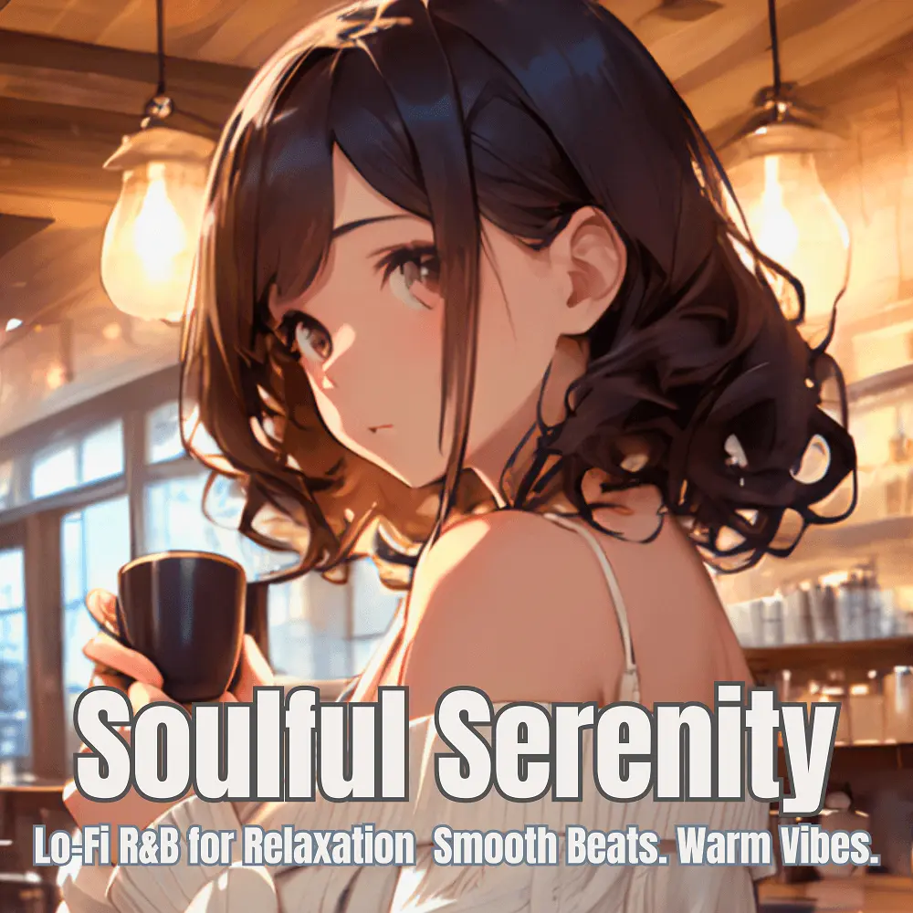

R&B · Lo-Fi
Soulful Serenity – Smooth R&B Lo-Fi Beats for Relaxation
Nanashino-chan
Explore Soulful Serenity – Smooth R&B Lo-Fi Beats for Relaxation by Nanashino-chan: 21 instrumental tracks spanning R&B / Lo-Fi. Start with Soulful Beginnings / Smooth Sunrise, preview the collection and find your favorites on streaming services.
2025-07-04 · Released · 21 tracks · Instrumental
Preview the album
The jacket stays here until you choose a track. Playback uses YouTube.
YOUTUBE PREVIEW
Choose a track to listen
The jacket stays here until you choose a track. Playback uses YouTube.
If playback is unavailable, open the album or track on the streaming service.
Find this album on streaming services
Links marked “search” open search results. Select the album or track on the service.
Track list 21
- 01Soulful Beginnings
- 02Smooth Sunrise
- 03Mellow Grooves
- 04Velvet Rhythms
- 05Silky Vibes
- 06Chilled Harmonies
- 07Silky Touch
- 08Evening Breeze
- 09Gentle Flow
- 10Dreamy Echoes
- 11Warm Embrace
- 12Soothing Waves
- 13Serene Melody
- 14Velvet Touch
- 15Midnight Soul
- 16Relaxed Reverie
- 17Soft Whispers
- 18Hazy Reflections
- 19Smooth Night
- 20Soulful Journey
- 21Serenity's End
Find a sound for your next post
Copy “Nanashino-chan + track title” and paste it into your social app’s music search. Availability depends on your region and account. Copying the name does not grant usage rights.